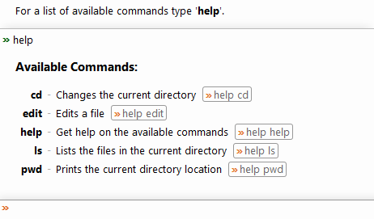
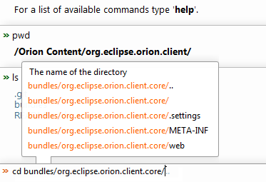

The Shell page provides a command line interface for interacting with Orion. The list of available commands can be displayed at any time with the command help.

By default this page contains some basic commands for navigating the workspace file system and editing files. Orion services orion.shell.command and orion.shell.type are provided to enable clients to register additional commands and parameter types on this page.
The input line provides assistance with command arguments whenever it can based on the expected parameter types. A command with invalid syntax or argument values will not be accepted.

The output of a command can be redirected to a workspace file by specifying a --output value.
This document is maintained in a collaborative wiki. If you wish to update or modify this document please visit http://wiki.eclipse.org/Orion/Documentation/User_Guide/Reference/Shell_page